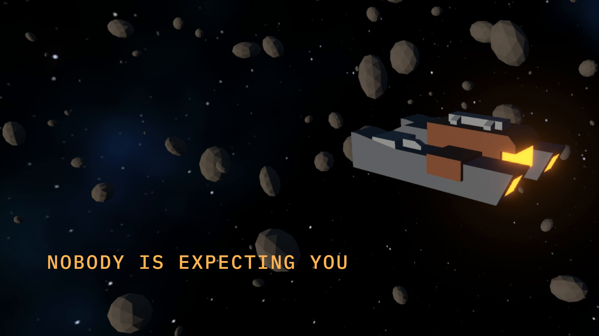
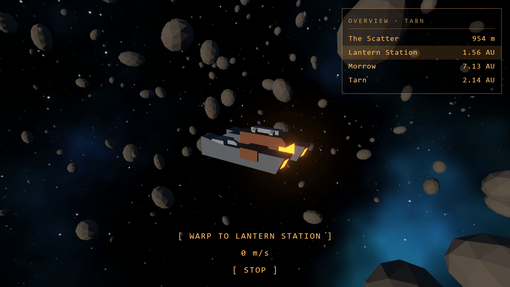
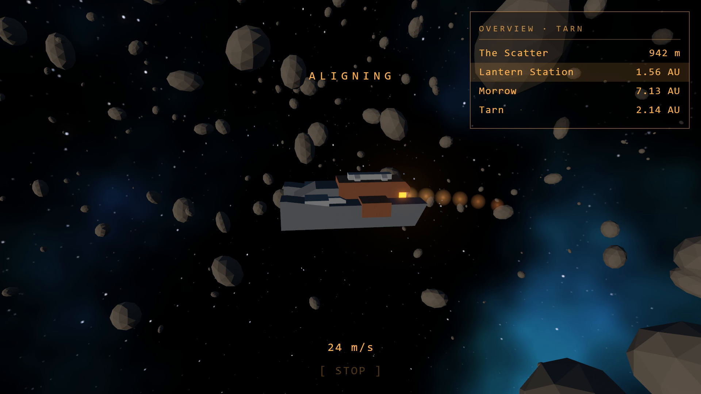
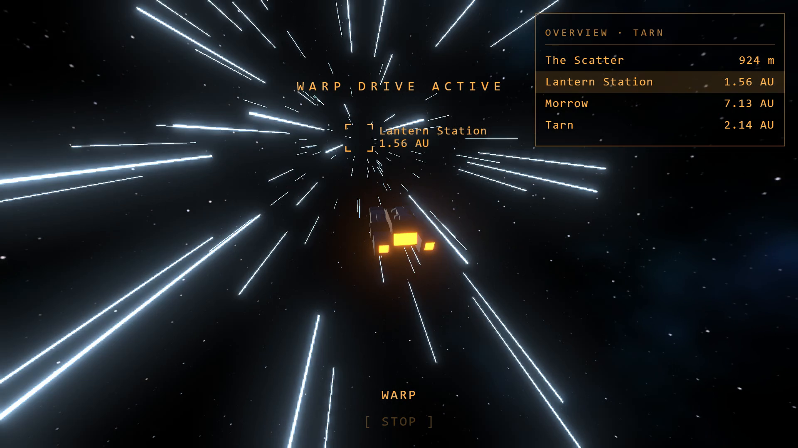
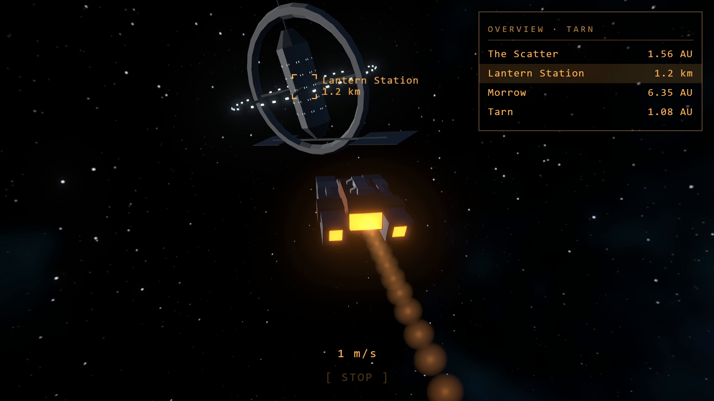
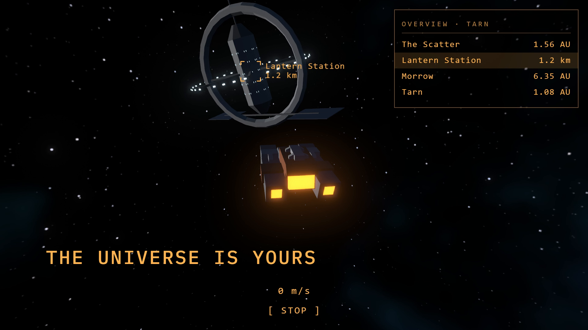
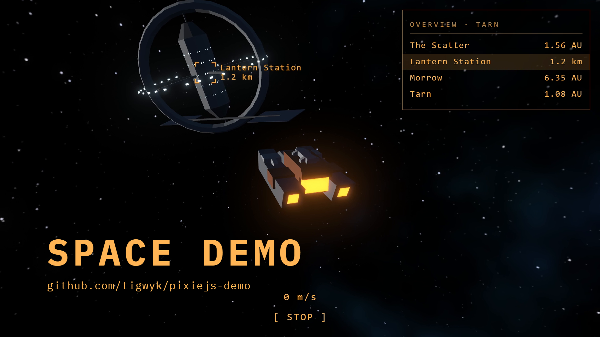

Close on the Ship among the rocks. The line prints: NOBODY IS EXPECTING YOU. The camera pulls back.

Lantern Station is selected on the Overview. The Warp button appears.

The Ship turns toward the station and the engine trail starts.

Warp drive active. The camera swings behind the Ship as the stars rush past.

The Ship comes to rest with the station dead ahead, 1.2 km out.

The line prints: THE UNIVERSE IS YOURS.

SPACE DEMO and the repo address print over the Ship and the station.